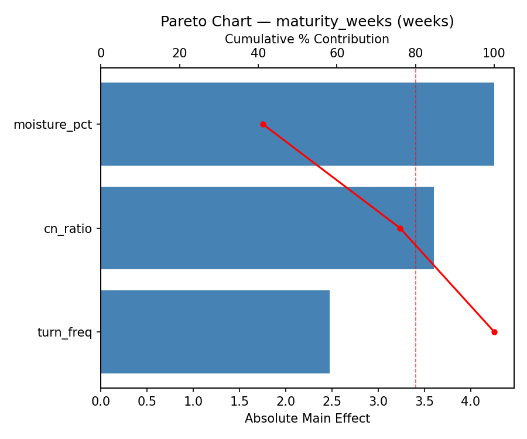
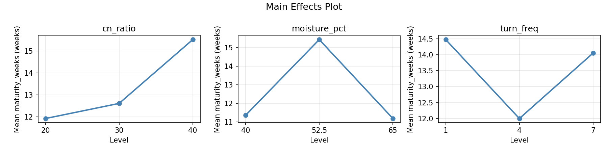
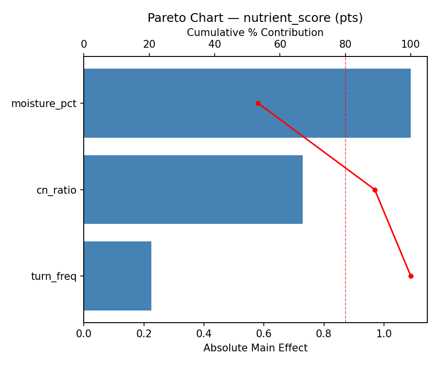
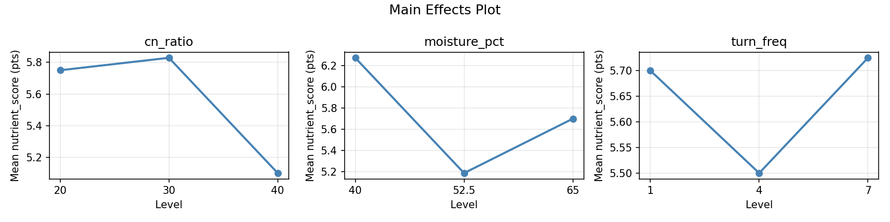
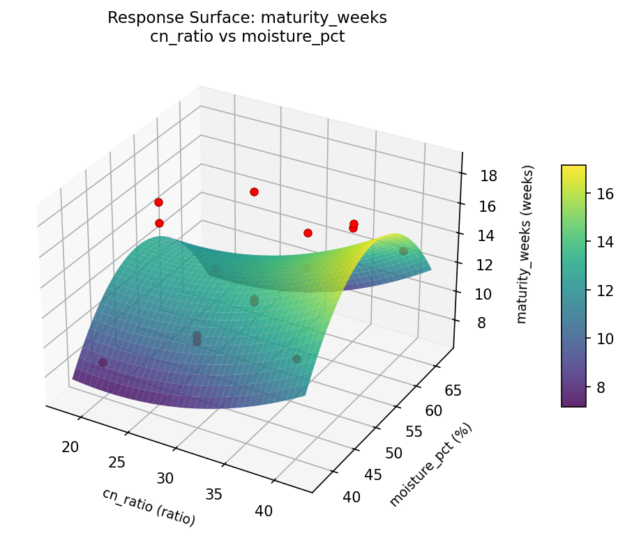
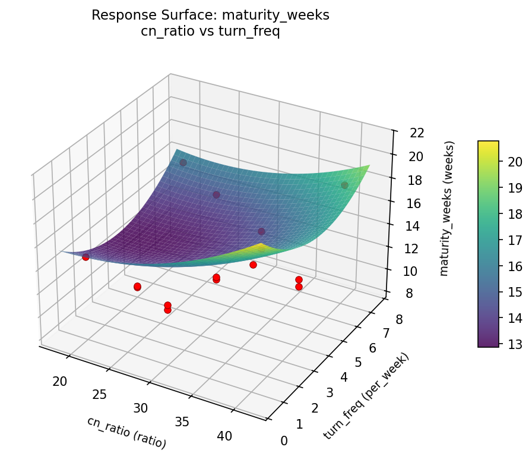
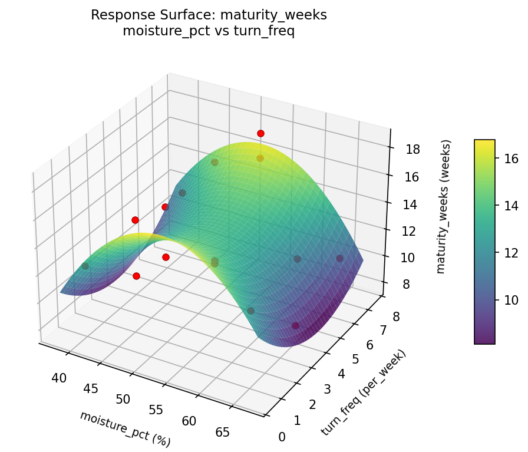
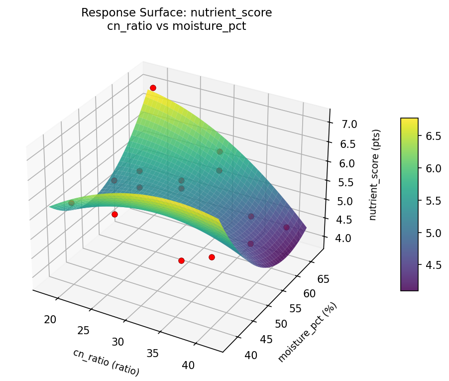
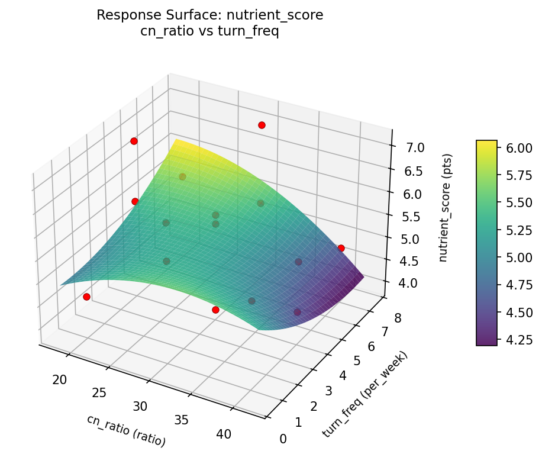
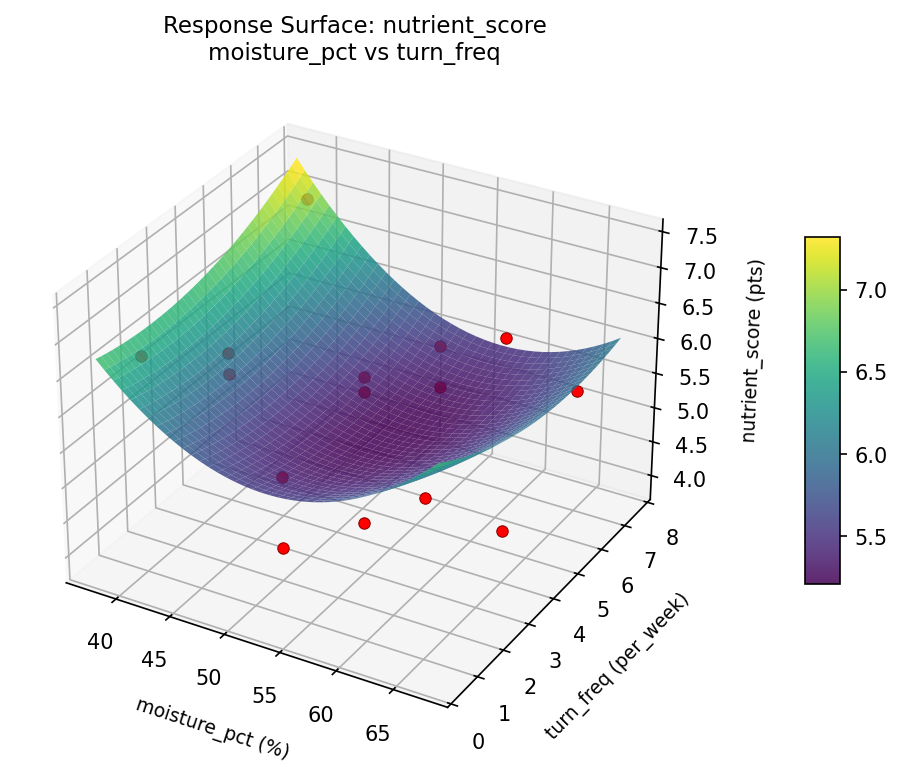

Summary
This experiment investigates compost maturity optimization. Box-Behnken design to minimize maturation time and maximize nutrient content by tuning C:N ratio, moisture, and turning frequency.
The design varies 3 factors: cn ratio (ratio), ranging from 20 to 40, moisture pct (%), ranging from 40 to 65, and turn freq (per_week), ranging from 1 to 7. The goal is to optimize 2 responses: maturity weeks (weeks) (minimize) and nutrient score (pts) (maximize). Fixed conditions held constant across all runs include pile volume = 1m3, initial material = mixed_greens_browns.
A Box-Behnken design was chosen because it efficiently fits quadratic models with 3 continuous factors while avoiding extreme corner combinations — requiring only 15 runs instead of the 8 needed for a full factorial at two levels.
Quadratic response surface models were fitted to capture potential curvature and factor interactions. The RSM contour plots below visualize how pairs of factors jointly affect each response.
Key Findings
For maturity weeks, the most influential factors were moisture pct (41.2%), cn ratio (34.9%), turn freq (24.0%). The best observed value was 8.4 (at cn ratio = 30, moisture pct = 40, turn freq = 7).
For nutrient score, the most influential factors were moisture pct (53.3%), cn ratio (35.7%), turn freq (11.0%). The best observed value was 7.1 (at cn ratio = 30, moisture pct = 40, turn freq = 7).
Recommended Next Steps
- Run confirmation experiments at the predicted optimal settings to validate the model.
- Consider whether any fixed factors should be varied in a future study.
Experimental Setup
Factors
| Factor | Low | High | Unit |
|---|
cn_ratio | 20 | 40 | ratio |
moisture_pct | 40 | 65 | % |
turn_freq | 1 | 7 | per_week |
Fixed: pile_volume = 1m3, initial_material = mixed_greens_browns
Responses
| Response | Direction | Unit |
|---|
maturity_weeks | ↓ minimize | weeks |
nutrient_score | ↑ maximize | pts |
Configuration
{
"metadata": {
"name": "Compost Maturity Optimization",
"description": "Box-Behnken design to minimize maturation time and maximize nutrient content by tuning C:N ratio, moisture, and turning frequency"
},
"factors": [
{
"name": "cn_ratio",
"levels": [
"20",
"40"
],
"type": "continuous",
"unit": "ratio"
},
{
"name": "moisture_pct",
"levels": [
"40",
"65"
],
"type": "continuous",
"unit": "%"
},
{
"name": "turn_freq",
"levels": [
"1",
"7"
],
"type": "continuous",
"unit": "per_week"
}
],
"fixed_factors": {
"pile_volume": "1m3",
"initial_material": "mixed_greens_browns"
},
"responses": [
{
"name": "maturity_weeks",
"optimize": "minimize",
"unit": "weeks"
},
{
"name": "nutrient_score",
"optimize": "maximize",
"unit": "pts"
}
],
"settings": {
"operation": "box_behnken",
"test_script": "use_cases/98_compost_maturity/sim.sh"
}
}
Experimental Matrix
The Box-Behnken Design produces 15 runs. Each row is one experiment with specific factor settings.
| Run | cn_ratio | moisture_pct | turn_freq |
|---|
| 1 | 30 | 40 | 1 |
| 2 | 30 | 52.5 | 4 |
| 3 | 40 | 52.5 | 7 |
| 4 | 40 | 52.5 | 1 |
| 5 | 30 | 52.5 | 4 |
| 6 | 30 | 52.5 | 4 |
| 7 | 20 | 52.5 | 7 |
| 8 | 40 | 40 | 4 |
| 9 | 30 | 40 | 7 |
| 10 | 40 | 65 | 4 |
| 11 | 20 | 52.5 | 1 |
| 12 | 30 | 65 | 7 |
| 13 | 20 | 40 | 4 |
| 14 | 20 | 65 | 4 |
| 15 | 30 | 65 | 1 |
Step-by-Step Workflow
1
Preview the design
$ python doe.py info --config use_cases/98_compost_maturity/config.json
2
Generate the runner script
$ python doe.py generate --config use_cases/98_compost_maturity/config.json \
--output use_cases/98_compost_maturity/results/run.sh --seed 42
3
Execute the experiments
$ bash use_cases/98_compost_maturity/results/run.sh
4
Analyze results
$ python doe.py analyze --config use_cases/98_compost_maturity/config.json
5
Get optimization recommendations
$ python doe.py optimize --config use_cases/98_compost_maturity/config.json
6
Generate the HTML report
$ python doe.py report --config use_cases/98_compost_maturity/config.json \
--output use_cases/98_compost_maturity/results/report.html
Real-World Experiment Workflow
ℹ
Physical Agriculture Experiment? Use the Manual Workflow
Agricultural experiments involve real soil, plants, weather, and growing seasons. Results depend on biological processes that can't be scripted. The simulation script above is for demonstration. For your real experiments, use record, status, and export-worksheet.
$ python doe.py export-worksheet --config use_cases/98_compost_maturity/config.json \
--format csv --output worksheet.csv
$ python doe.py status --config use_cases/98_compost_maturity/config.json
$ python doe.py record --config use_cases/98_compost_maturity/config.json --run 1
$ python doe.py analyze --config use_cases/98_compost_maturity/config.json --partial
$ python doe.py analyze --config use_cases/98_compost_maturity/config.json
$ python doe.py optimize --config use_cases/98_compost_maturity/config.json
$ python doe.py report --config use_cases/98_compost_maturity/config.json \
--output report.html
✔
Works Without a Test Script
The analysis pipeline doesn't care how results were produced. Record your measurements with record, and the full analysis, optimization, and reporting pipeline works identically. Use --partial to get early insights before all runs are complete.
Features Exercised
| Feature | Value |
|---|
| Design type | box_behnken |
| Factor types | continuous (all 3) |
| Arg style | double-dash |
| Responses | 2 (maturity_weeks ↓, nutrient_score ↑) |
| Total runs | 15 |
Analysis Results
Generated from actual experiment runs using the DOE Helper Tool.
Response: maturity_weeks
Top factors: moisture_pct (41.2%), cn_ratio (34.9%), turn_freq (24.0%).
Pareto Chart

Main Effects Plot

Response: nutrient_score
Top factors: moisture_pct (53.3%), cn_ratio (35.7%), turn_freq (11.0%).
Pareto Chart

Main Effects Plot

Response Surface Plots
3D surfaces fitted with quadratic RSM. Red dots are observed data points.
maturity weeks cn ratio vs moisture pct

maturity weeks cn ratio vs turn freq

maturity weeks moisture pct vs turn freq

nutrient score cn ratio vs moisture pct

nutrient score cn ratio vs turn freq

nutrient score moisture pct vs turn freq

Full Analysis Output
RSM surface: rsm_maturity_weeks_cn_ratio_vs_moisture_pct.png
RSM surface: rsm_maturity_weeks_cn_ratio_vs_turn_freq.png
RSM surface: rsm_maturity_weeks_moisture_pct_vs_turn_freq.png
RSM surface: rsm_nutrient_score_cn_ratio_vs_moisture_pct.png
RSM surface: rsm_nutrient_score_cn_ratio_vs_turn_freq.png
RSM surface: rsm_nutrient_score_moisture_pct_vs_turn_freq.png
=== Main Effects: maturity_weeks ===
Factor Effect Std Error % Contribution
--------------------------------------------------------------
moisture_pct 4.2536 0.8441 41.2%
cn_ratio 3.6000 0.8441 34.9%
turn_freq 2.4750 0.8441 24.0%
=== Summary Statistics: maturity_weeks ===
cn_ratio:
Level N Mean Std Min Max
------------------------------------------------------------
20 4 11.9250 4.0533 8.4000 16.1000
30 7 12.6143 2.7107 10.3000 18.5000
40 4 15.5250 2.9285 12.7000 18.2000
moisture_pct:
Level N Mean Std Min Max
------------------------------------------------------------
40 4 11.3500 1.9279 8.5000 12.7000
52.5 7 15.4286 3.1175 11.2000 18.5000
65 4 11.1750 2.2589 8.4000 13.3000
turn_freq:
Level N Mean Std Min Max
------------------------------------------------------------
1 4 14.4750 2.6961 12.3000 18.2000
4 7 12.0000 3.4312 8.4000 18.5000
7 4 14.0500 3.5454 10.3000 17.9000
=== Main Effects: nutrient_score ===
Factor Effect Std Error % Contribution
--------------------------------------------------------------
moisture_pct 1.0893 0.2382 53.3%
cn_ratio 0.7286 0.2382 35.7%
turn_freq 0.2250 0.2382 11.0%
=== Summary Statistics: nutrient_score ===
cn_ratio:
Level N Mean Std Min Max
------------------------------------------------------------
20 4 5.7500 1.0344 4.6000 7.1000
30 7 5.8286 1.0259 3.9000 7.1000
40 4 5.1000 0.5598 4.4000 5.6000
moisture_pct:
Level N Mean Std Min Max
------------------------------------------------------------
40 4 6.2750 0.7500 5.5000 7.1000
52.5 7 5.1857 0.7515 3.9000 6.0000
65 4 5.7000 1.1225 4.4000 7.1000
turn_freq:
Level N Mean Std Min Max
------------------------------------------------------------
1 4 5.7000 0.8679 4.6000 6.7000
4 7 5.5000 1.0614 3.9000 7.1000
7 4 5.7250 0.9535 4.9000 7.1000
Pareto chart (maturity_weeks): use_cases/98_compost_maturity/results/analysis/pareto_maturity_weeks.png
Pareto chart (nutrient_score): use_cases/98_compost_maturity/results/analysis/pareto_nutrient_score.png
Main effects (maturity_weeks): use_cases/98_compost_maturity/results/analysis/main_effects_maturity_weeks.png
Main effects (nutrient_score): use_cases/98_compost_maturity/results/analysis/main_effects_nutrient_score.png
Optimization Recommendations
=== Optimization: maturity_weeks ===
Direction: minimize
Best observed run: #3
cn_ratio = 30
moisture_pct = 40
turn_freq = 7
Value: 8.4
RSM Model (linear, R² = 0.0864, Adj R² = -0.1627):
Coefficients:
intercept +13.2067
cn_ratio -1.0000
moisture_pct +0.7750
turn_freq -0.1250
RSM Model (quadratic, R² = 0.4126, Adj R² = -0.6446):
Coefficients:
intercept +14.6000
cn_ratio -1.0000
moisture_pct +0.7750
turn_freq -0.1250
cn_ratio*moisture_pct +1.6250
cn_ratio*turn_freq +0.6750
moisture_pct*turn_freq -1.8750
cn_ratio^2 +0.7125
moisture_pct^2 -1.7375
turn_freq^2 -1.5875
Curvature analysis:
moisture_pct coef=-1.7375 concave (has a maximum)
turn_freq coef=-1.5875 concave (has a maximum)
cn_ratio coef=+0.7125 convex (has a minimum)
Notable interactions:
moisture_pct*turn_freq coef=-1.8750 (antagonistic)
cn_ratio*moisture_pct coef=+1.6250 (synergistic)
cn_ratio*turn_freq coef=+0.6750 (synergistic)
Predicted optimum (from linear model):
cn_ratio = 20
moisture_pct = 65
turn_freq = 4
Predicted value: 14.9817
Model quality: Weak fit — consider adding center points or using a different design.
Factor importance:
1. moisture_pct (effect: 2.4, contribution: 40.2%)
2. cn_ratio (effect: 2.0, contribution: 32.8%)
3. turn_freq (effect: 1.6, contribution: 26.9%)
=== Optimization: nutrient_score ===
Direction: maximize
Best observed run: #3
cn_ratio = 30
moisture_pct = 40
turn_freq = 7
Value: 7.1
RSM Model (linear, R² = 0.2192, Adj R² = 0.0063):
Coefficients:
intercept +5.6133
cn_ratio +0.5625
moisture_pct +0.0875
turn_freq +0.0500
RSM Model (quadratic, R² = 0.2751, Adj R² = -1.0298):
Coefficients:
intercept +5.5667
cn_ratio +0.5625
moisture_pct +0.0875
turn_freq +0.0500
cn_ratio*moisture_pct -0.1750
cn_ratio*turn_freq +0.1000
moisture_pct*turn_freq -0.2000
cn_ratio^2 -0.1458
moisture_pct^2 +0.2542
turn_freq^2 -0.0208
Curvature analysis:
moisture_pct coef=+0.2542 convex (has a minimum)
cn_ratio coef=-0.1458 concave (has a maximum)
turn_freq coef=-0.0208 negligible curvature
Predicted optimum (from linear model):
cn_ratio = 40
moisture_pct = 65
turn_freq = 4
Predicted value: 6.2633
Model quality: Weak fit — consider adding center points or using a different design.
Factor importance:
1. cn_ratio (effect: 1.1, contribution: 71.3%)
2. moisture_pct (effect: 0.4, contribution: 22.4%)
3. turn_freq (effect: 0.1, contribution: 6.3%)